Last updated: 2022-11-17
Checks: 7 0
Knit directory:
human_ecology/
This reproducible R Markdown analysis was created with workflowr (version 1.7.0). The Checks tab describes the reproducibility checks that were applied when the results were created. The Past versions tab lists the development history.
Great! Since the R Markdown file has been committed to the Git repository, you know the exact version of the code that produced these results.
Great job! The global environment was empty. Objects defined in the global environment can affect the analysis in your R Markdown file in unknown ways. For reproduciblity it’s best to always run the code in an empty environment.
The command set.seed(20220620) was run prior to running the code in the R Markdown file.
Setting a seed ensures that any results that rely on randomness, e.g.
subsampling or permutations, are reproducible.
Great job! Recording the operating system, R version, and package versions is critical for reproducibility.
Nice! There were no cached chunks for this analysis, so you can be confident that you successfully produced the results during this run.
Great job! Using relative paths to the files within your workflowr project makes it easier to run your code on other machines.
Great! You are using Git for version control. Tracking code development and connecting the code version to the results is critical for reproducibility.
The results in this page were generated with repository version 36fa0fa. See the Past versions tab to see a history of the changes made to the R Markdown and HTML files.
Note that you need to be careful to ensure that all relevant files for the
analysis have been committed to Git prior to generating the results (you can
use wflow_publish or wflow_git_commit). workflowr only
checks the R Markdown file, but you know if there are other scripts or data
files that it depends on. Below is the status of the Git repository when the
results were generated:
Ignored files:
Ignored: .Rhistory
Ignored: .Rproj.user/
Unstaged changes:
Modified: analysis/index.Rmd
Modified: analysis/modeliza_commons.Rmd
Modified: code/load_pkgs.R
Modified: data/data_mean.csv
Modified: glmulti.analysis.modgen.back
Modified: glmulti.analysis.mods.back
Note that any generated files, e.g. HTML, png, CSS, etc., are not included in this status report because it is ok for generated content to have uncommitted changes.
These are the previous versions of the repository in which changes were made
to the R Markdown (analysis/modeliza_commons_social.Rmd) and HTML (docs/modeliza_commons_social.html)
files. If you’ve configured a remote Git repository (see
?wflow_git_remote), click on the hyperlinks in the table below to
view the files as they were in that past version.
| File | Version | Author | Date | Message |
|---|---|---|---|---|
| Rmd | 36fa0fa | ajpelu | 2022-11-17 | update analysis with tables |
| html | ae78625 | ajpelu | 2022-11-17 | Build site. |
| Rmd | 6d44f34 | ajpelu | 2022-11-17 | add new analysis |
| html | 6d44f34 | ajpelu | 2022-11-17 | add new analysis |
source("code/load_pkgs.R")
source("code/aux_functions.R")d_raw <- read_csv(here::here("data/cleaned_data.csv"), show_col_types = FALSE)
selected_vars <- c("sr.spr",
"sr.sum",
"sr.win",
"cic",
"fosforo",
"ph",
"potasio",
"nitrogeno")The potential selected variables are (see compare_commons):
d_raw |> dplyr::select(one_of(selected_vars)) |> names()[1] "sr.spr" "sr.sum" "sr.win" "cic" "fosforo" "ph"
[7] "potasio" "nitrogeno"d <- d_raw |>
dplyr::select(one_of(selected_vars),
commons,
transh,
parcela,
quadrat,
shannon,
fitovol_dm3,
rec_total_porc,
rec_vegetal_porc,
riqueza,
tasa_cons) %>%
mutate(parcela = as.factor(parcela))covariates <- c(selected_vars,
"commons",
"transh")
full_covariates <- glue::glue_collapse(covariates, sep = "+")
random_part <- "(1 | parcela)"data_mean <- read_csv(here::here("data/data_mean.csv"), show_col_types = FALSE)yvar <- "riqueza"
covariates_lmer <- glue::glue_collapse(c(covariates, random_part),
sep = " + ")
f <- reformulate(covariates_lmer, response = yvar)
m <- lmer(glue::glue_collapse(c(f, random_part), " + "),
data = d)faux <- reformulate(
glue::glue_collapse(covariates, sep = " + "), response = yvar)
maux <- lm(faux, data = d)
simulated_resid <- DHARMa::simulateResiduals(maux, n = 1000)
plot(simulated_resid)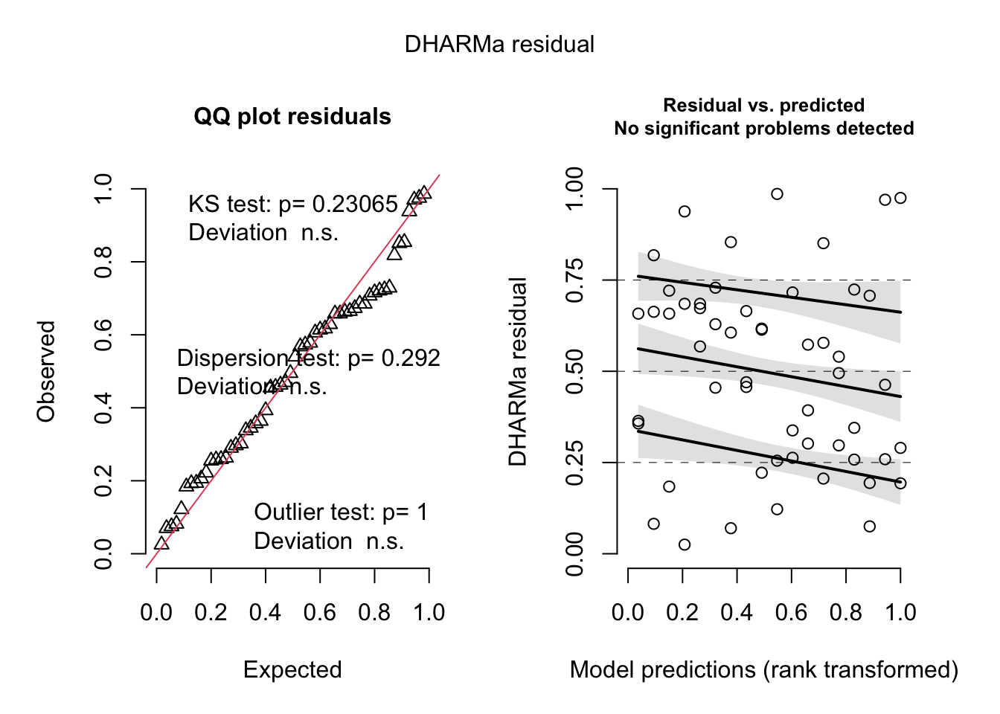
| Version | Author | Date |
|---|---|---|
| 6d44f34 | ajpelu | 2022-11-17 |
plot(performance::check_distribution(maux), panel = FALSE)[[1]] + labs(subtitle = faux) 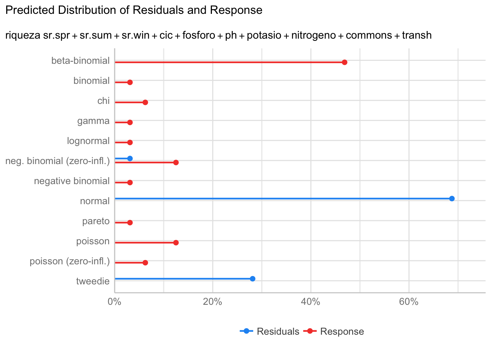
| Version | Author | Date |
|---|---|---|
| 6d44f34 | ajpelu | 2022-11-17 |
check_model(maux)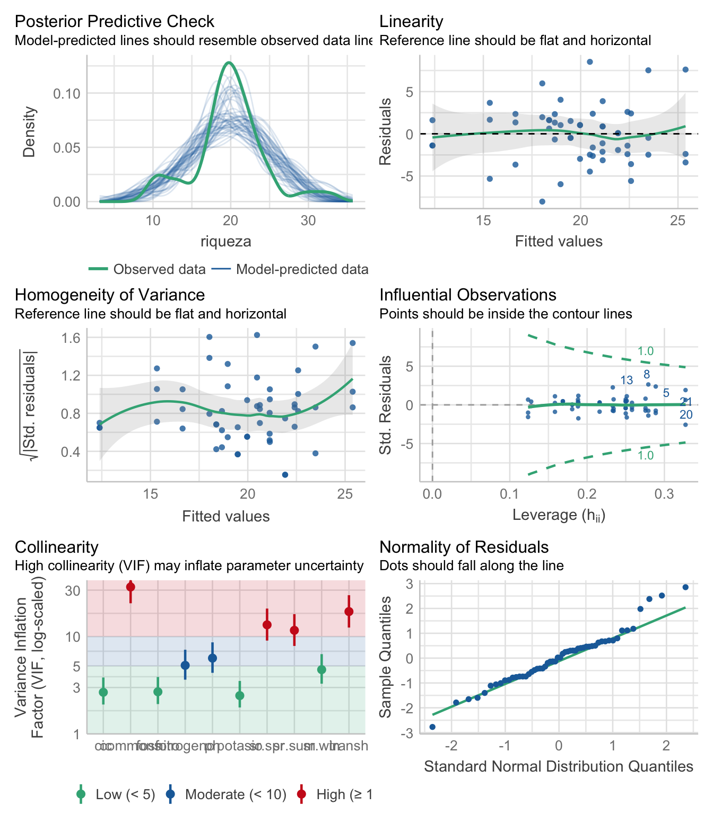
| Version | Author | Date |
|---|---|---|
| 6d44f34 | ajpelu | 2022-11-17 |
rm(maux, faux, simulated_resid) # remove bm <- lmer(
riqueza ~ commons + transh + commons:transh + (1 | parcela),
data = d
)
performance(bm) %>%
kbl() %>%
kable_styling()| AIC | AICc | BIC | R2_conditional | R2_marginal | ICC | RMSE | Sigma |
|---|---|---|---|---|---|---|---|
| 302.5369 | 305.7369 | 318.4487 | 0.3075993 | 0.1994962 | 0.1350439 | 3.596747 | 3.976784 |
assign(paste0('table_performance', yvar), (performance(bm) |> mutate(yvar = yvar))) anova(as_lmerModLmerTest(bm))Type III Analysis of Variance Table with Satterthwaite's method
Sum Sq Mean Sq NumDF DenDF F value Pr(>F)
commons 85.430 42.715 2 12 2.7010 0.10752
transh 56.613 56.613 1 12 3.5797 0.08286 .
commons:transh 22.423 11.212 2 12 0.7089 0.51167
---
Signif. codes: 0 '***' 0.001 '**' 0.01 '*' 0.05 '.' 0.1 ' ' 1formatAnova(as.data.frame(anova(as_lmerModLmerTest(bm))), yvar)tabla_coef(bm)| effect | term | estimate | std.error | statistic | df | p.value |
|---|---|---|---|---|---|---|
| fixed | (Intercept) | 22.44 | 1.61 | 13.97 | 12 | 0.000 |
| fixed | commonsPontones | -2.22 | 2.27 | -0.98 | 12 | 0.347 |
| fixed | commonsSantiago | -1.89 | 2.27 | -0.83 | 12 | 0.422 |
| fixed | transhshort | -1.67 | 2.27 | -0.73 | 12 | 0.477 |
| fixed | commonsPontones:transhshort | -3.00 | 3.21 | -0.93 | 12 | 0.369 |
| fixed | commonsSantiago:transhshort | 0.56 | 3.21 | 0.17 | 12 | 0.866 |
assign(paste0('table_glance', yvar), (glance(bm) |> mutate(yvar = yvar))) tabla_postHoc_commons(bm)| commons | estimate | SE | df | t.ratio | p.value |
|---|---|---|---|---|---|
| Castril - Pontones | 3.7222 | 1.6063 | 12 | 2.3172 | 0.0917 |
| Castril - Santiago | 1.6111 | 1.6063 | 12 | 1.0030 | 0.5890 |
| Pontones - Santiago | -2.1111 | 1.6063 | 12 | -1.3143 | 0.4144 |
tabla_postHoc_transh(bm)| transh | estimate | SE | df | t.ratio | p.value |
|---|---|---|---|---|---|
| long - short | 2.4815 | 1.3116 | 12 | 1.892 | 0.0829 |
tabla_postHoc_int(bm)| commons | transh | estimate | SE | df | t.ratio | p.value |
|---|---|---|---|---|---|---|
| Castril - Pontones | long | 2.2222 | 2.2717 | 12 | 0.9782 | 0.6037 |
| Castril - Santiago | long | 1.8889 | 2.2717 | 12 | 0.8315 | 0.6914 |
| Pontones - Santiago | long | -0.3333 | 2.2717 | 12 | -0.1467 | 0.9882 |
| Castril - Pontones | short | 5.2222 | 2.2717 | 12 | 2.2988 | 0.0945 |
| Castril - Santiago | short | 1.3333 | 2.2717 | 12 | 0.5869 | 0.8296 |
| Pontones - Santiago | short | -3.8889 | 2.2717 | 12 | -1.7119 | 0.2408 |
tabla_postHoc_transhcommons(bm)| transh | commons | estimate | SE | df | t.ratio | p.value |
|---|---|---|---|---|---|---|
| long - short | Castril | 1.6667 | 2.2717 | 12 | 0.7337 | 0.4772 |
| long - short | Pontones | 4.6667 | 2.2717 | 12 | 2.0543 | 0.0624 |
| long - short | Santiago | 1.1111 | 2.2717 | 12 | 0.4891 | 0.6336 |
name_ylab <- "Richness (species number)"
plot_violoin2(df = d, yvar = yvar, name_ylab = name_ylab)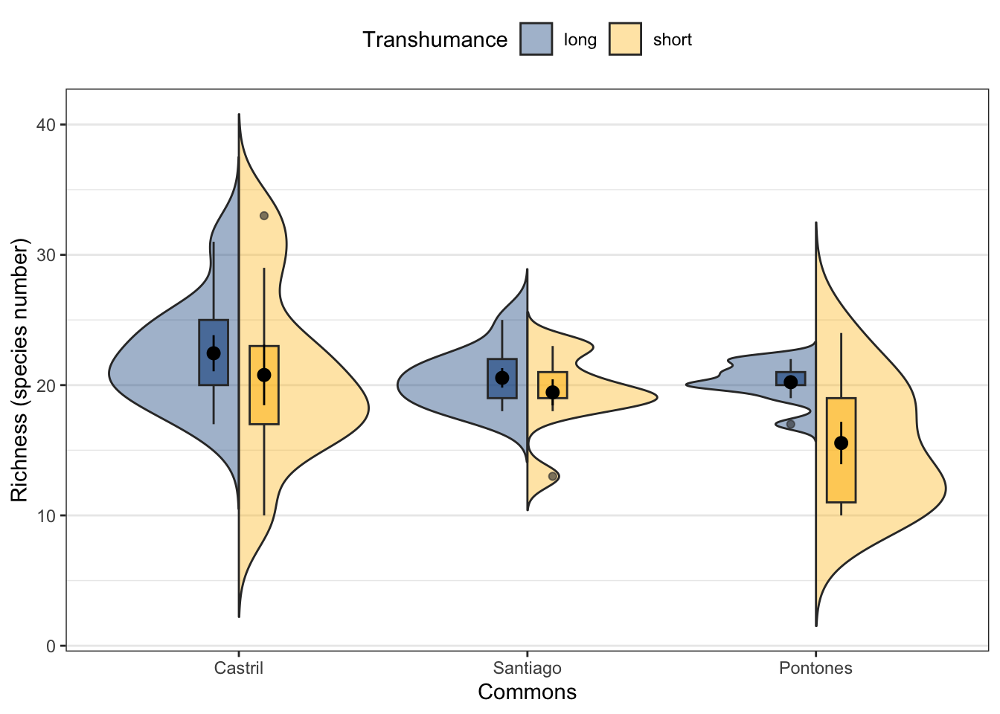
| Version | Author | Date |
|---|---|---|
| 6d44f34 | ajpelu | 2022-11-17 |
yvar <- "shannon"
covariates_lmer <- glue::glue_collapse(c(covariates, random_part),
sep = " + ")
f <- reformulate(covariates_lmer, response = yvar)
m <- lmer(glue::glue_collapse(c(f, random_part), " + "),
data = d)faux <- reformulate(
glue::glue_collapse(covariates, sep = " + "), response = yvar)
maux <- lm(faux, data = d)
simulated_resid <- DHARMa::simulateResiduals(maux, n = 1000)
plot(simulated_resid)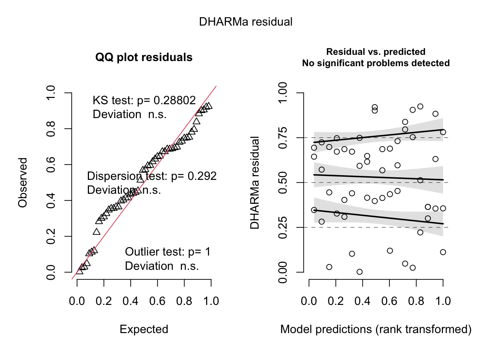
| Version | Author | Date |
|---|---|---|
| 6d44f34 | ajpelu | 2022-11-17 |
plot(performance::check_distribution(maux), panel = FALSE)[[1]] + labs(subtitle = faux) 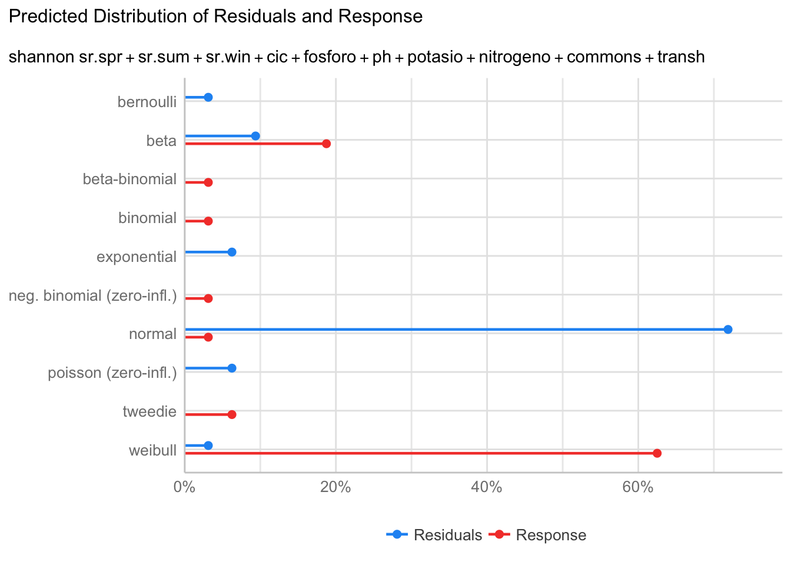
| Version | Author | Date |
|---|---|---|
| 6d44f34 | ajpelu | 2022-11-17 |
check_model(maux)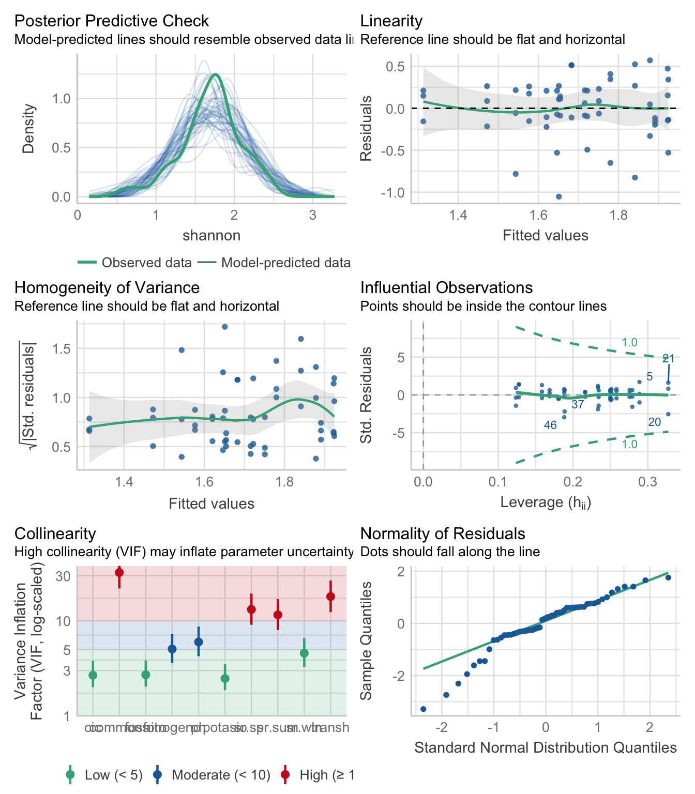
| Version | Author | Date |
|---|---|---|
| 6d44f34 | ajpelu | 2022-11-17 |
rm(maux, faux, simulated_resid) # remove bm <- lmer(
shannon ~ commons + transh + commons:transh + (1 | parcela),
data = d
)
performance(bm) %>%
kbl() %>%
kable_styling()| AIC | AICc | BIC | R2_conditional | R2_marginal | ICC | RMSE | Sigma |
|---|---|---|---|---|---|---|---|
| 77.26368 | 80.46368 | 93.17555 | 0.064001 | 0.030642 | 0.0344136 | 0.3671763 | 0.3942384 |
assign(paste0('table_performance', yvar), (performance(bm) |> mutate(yvar = yvar))) anova(as_lmerModLmerTest(bm))Type III Analysis of Variance Table with Satterthwaite's method
Sum Sq Mean Sq NumDF DenDF F value Pr(>F)
commons 0.033360 0.016680 2 12 0.1073 0.8991
transh 0.198110 0.198110 1 12 1.2746 0.2810
commons:transh 0.012153 0.006076 2 12 0.0391 0.9618formatAnova(as.data.frame(anova(as_lmerModLmerTest(bm))), yvar)tabla_coef(bm)| effect | term | estimate | std.error | statistic | df | p.value |
|---|---|---|---|---|---|---|
| fixed | (Intercept) | 1.80 | 0.14 | 13.04 | 12 | 0.000 |
| fixed | commonsPontones | -0.04 | 0.20 | -0.22 | 12 | 0.828 |
| fixed | commonsSantiago | -0.08 | 0.20 | -0.39 | 12 | 0.701 |
| fixed | transhshort | -0.13 | 0.20 | -0.68 | 12 | 0.506 |
| fixed | commonsPontones:transhshort | -0.03 | 0.28 | -0.10 | 12 | 0.919 |
| fixed | commonsSantiago:transhshort | 0.05 | 0.28 | 0.17 | 12 | 0.865 |
assign(paste0('table_glance', yvar), (glance(bm) |> mutate(yvar = yvar))) tabla_postHoc_commons(bm)| commons | estimate | SE | df | t.ratio | p.value |
|---|---|---|---|---|---|
| Castril - Pontones | 0.0577 | 0.1383 | 12 | 0.4170 | 0.9093 |
| Castril - Santiago | 0.0530 | 0.1383 | 12 | 0.3833 | 0.9227 |
| Pontones - Santiago | -0.0047 | 0.1383 | 12 | -0.0337 | 0.9994 |
tabla_postHoc_transh(bm)| transh | estimate | SE | df | t.ratio | p.value |
|---|---|---|---|---|---|
| long - short | 0.1275 | 0.1129 | 12 | 1.129 | 0.281 |
tabla_postHoc_int(bm)| commons | transh | estimate | SE | df | t.ratio | p.value |
|---|---|---|---|---|---|---|
| Castril - Pontones | long | 0.0434 | 0.1955 | 12 | 0.2218 | 0.9733 |
| Castril - Santiago | long | 0.0770 | 0.1955 | 12 | 0.3936 | 0.9187 |
| Pontones - Santiago | long | 0.0336 | 0.1955 | 12 | 0.1718 | 0.9839 |
| Castril - Pontones | short | 0.0719 | 0.1955 | 12 | 0.3679 | 0.9285 |
| Castril - Santiago | short | 0.0290 | 0.1955 | 12 | 0.1485 | 0.9879 |
| Pontones - Santiago | short | -0.0429 | 0.1955 | 12 | -0.2195 | 0.9738 |
tabla_postHoc_transhcommons(bm)| transh | commons | estimate | SE | df | t.ratio | p.value |
|---|---|---|---|---|---|---|
| long - short | Castril | 0.1339 | 0.1955 | 12 | 0.6848 | 0.5065 |
| long - short | Pontones | 0.1625 | 0.1955 | 12 | 0.8310 | 0.4222 |
| long - short | Santiago | 0.0860 | 0.1955 | 12 | 0.4397 | 0.6680 |
name_ylab <- "Shannon index"
plot_violoin2(df = d, yvar = yvar, name_ylab = name_ylab)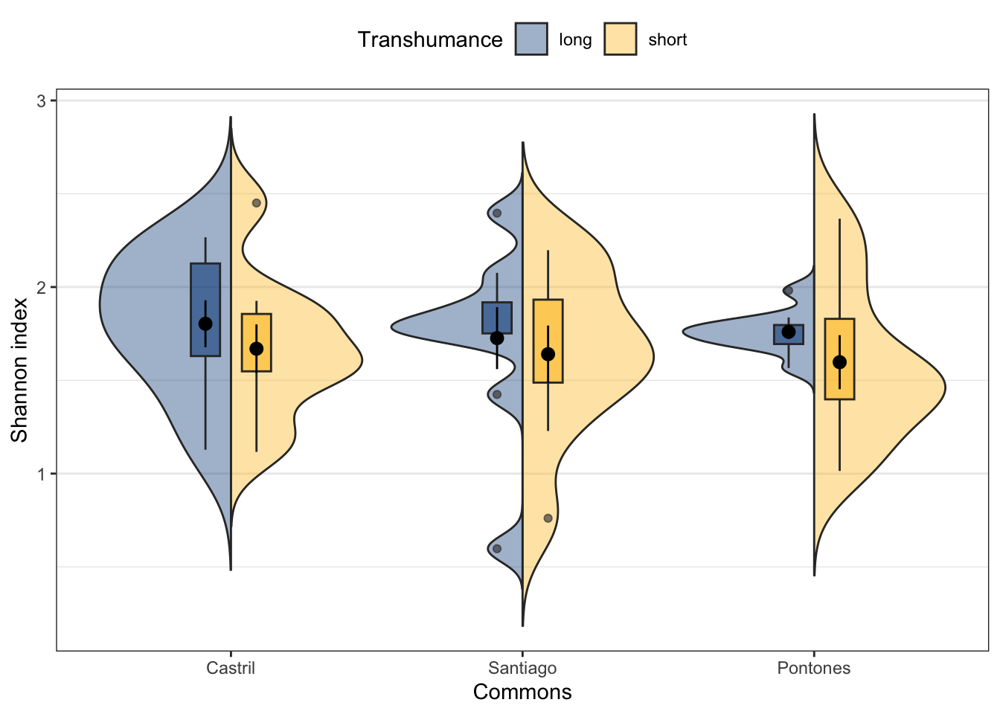
| Version | Author | Date |
|---|---|---|
| 6d44f34 | ajpelu | 2022-11-17 |
yvar <- "rec_total_porc"
covariates_lmer <- glue::glue_collapse(c(covariates, random_part),
sep = " + ")
f <- reformulate(covariates_lmer, response = yvar)
m <- lmer(glue::glue_collapse(c(f, random_part), " + "),
data = d)faux <- reformulate(
glue::glue_collapse(covariates, sep = " + "), response = yvar)
maux <- glm(faux, data = d)
simulated_resid <- DHARMa::simulateResiduals(maux, n = 1000)
plot(simulated_resid)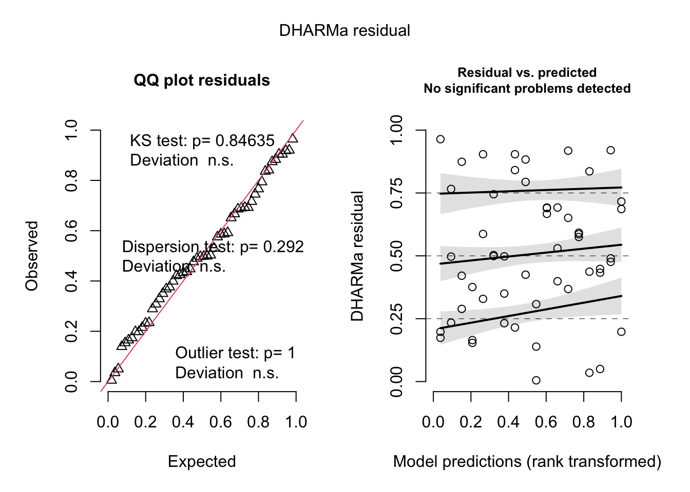
| Version | Author | Date |
|---|---|---|
| 6d44f34 | ajpelu | 2022-11-17 |
plot(performance::check_distribution(maux), panel = FALSE)[[1]] + labs(subtitle = faux)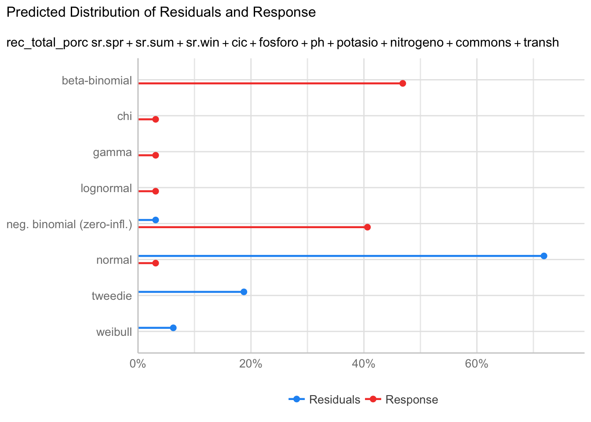
| Version | Author | Date |
|---|---|---|
| 6d44f34 | ajpelu | 2022-11-17 |
check_model(maux)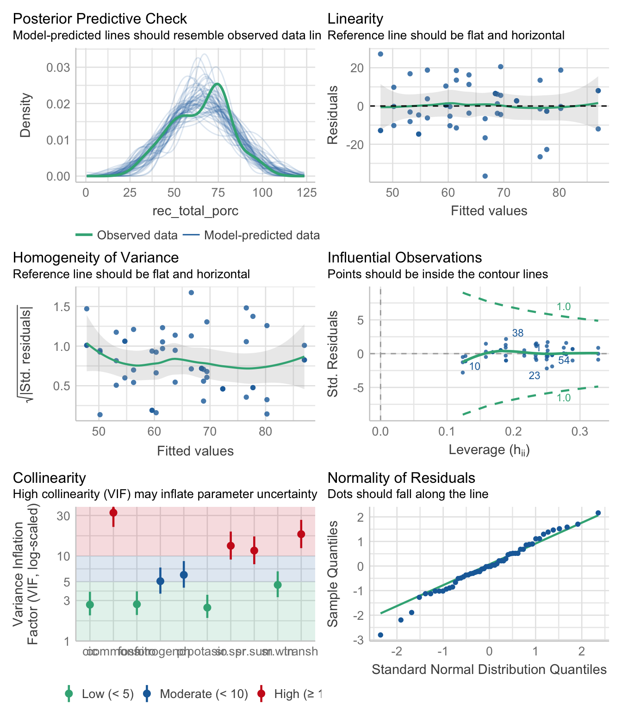
| Version | Author | Date |
|---|---|---|
| 6d44f34 | ajpelu | 2022-11-17 |
rm(maux, faux, simulated_resid) # remove bm <- lmer(
rec_total_porc ~ commons + transh + commons:transh + (1 | parcela),
data = d
)
performance(bm) %>%
kbl() %>%
kable_styling()| AIC | AICc | BIC | R2_conditional | R2_marginal | ICC | RMSE | Sigma |
|---|---|---|---|---|---|---|---|
| 409.8984 | 413.0984 | 425.8102 | 0.4941514 | 0.4070263 | 0.1469291 | 10.92852 | 12.11901 |
assign(paste0('table_performance', yvar), (performance(bm) |> mutate(yvar = yvar))) anova(as_lmerModLmerTest(bm))Type III Analysis of Variance Table with Satterthwaite's method
Sum Sq Mean Sq NumDF DenDF F value Pr(>F)
commons 500.1 250.04 2 12 1.7025 0.22342
transh 0.1 0.11 1 12 0.0007 0.97863
commons:transh 3629.4 1814.71 2 12 12.3559 0.00122 **
---
Signif. codes: 0 '***' 0.001 '**' 0.01 '*' 0.05 '.' 0.1 ' ' 1formatAnova(as.data.frame(anova(as_lmerModLmerTest(bm))), yvar)tabla_coef(bm)| effect | term | estimate | std.error | statistic | df | p.value |
|---|---|---|---|---|---|---|
| fixed | (Intercept) | 55.00 | 4.98 | 11.06 | 12 | 0.000 |
| fixed | commonsPontones | 18.33 | 7.04 | 2.61 | 12 | 0.023 |
| fixed | commonsSantiago | 12.22 | 7.04 | 1.74 | 12 | 0.108 |
| fixed | transhshort | 28.67 | 7.04 | 4.07 | 12 | 0.002 |
| fixed | commonsPontones:transhshort | -43.11 | 9.95 | -4.33 | 12 | 0.001 |
| fixed | commonsSantiago:transhshort | -42.56 | 9.95 | -4.28 | 12 | 0.001 |
assign(paste0('table_glance', yvar), (glance(bm) |> mutate(yvar = yvar))) tabla_postHoc_commons(bm)| commons | estimate | SE | df | t.ratio | p.value |
|---|---|---|---|---|---|
| Castril - Pontones | 3.2222 | 4.975 | 12 | 0.6477 | 0.7972 |
| Castril - Santiago | 9.0556 | 4.975 | 12 | 1.8202 | 0.2047 |
| Pontones - Santiago | 5.8333 | 4.975 | 12 | 1.1725 | 0.4908 |
tabla_postHoc_transh(bm)| transh | estimate | SE | df | t.ratio | p.value |
|---|---|---|---|---|---|
| long - short | -0.1111 | 4.0621 | 12 | -0.0274 | 0.9786 |
tabla_postHoc_int(bm)| commons | transh | estimate | SE | df | t.ratio | p.value |
|---|---|---|---|---|---|---|
| Castril - Pontones | long | -18.3333 | 7.0358 | 12 | -2.6057 | 0.0558 |
| Castril - Santiago | long | -12.2222 | 7.0358 | 12 | -1.7372 | 0.2320 |
| Pontones - Santiago | long | 6.1111 | 7.0358 | 12 | 0.8686 | 0.6693 |
| Castril - Pontones | short | 24.7778 | 7.0358 | 12 | 3.5217 | 0.0109 |
| Castril - Santiago | short | 30.3333 | 7.0358 | 12 | 4.3113 | 0.0027 |
| Pontones - Santiago | short | 5.5556 | 7.0358 | 12 | 0.7896 | 0.7162 |
tabla_postHoc_transhcommons(bm)| transh | commons | estimate | SE | df | t.ratio | p.value |
|---|---|---|---|---|---|---|
| long - short | Castril | -28.6667 | 7.0358 | 12 | -4.0744 | 0.0015 |
| long - short | Pontones | 14.4444 | 7.0358 | 12 | 2.0530 | 0.0625 |
| long - short | Santiago | 13.8889 | 7.0358 | 12 | 1.9740 | 0.0718 |
name_ylab <- "Total Coverage (%)"
plot_violoin2(df = d, yvar = yvar, name_ylab = name_ylab)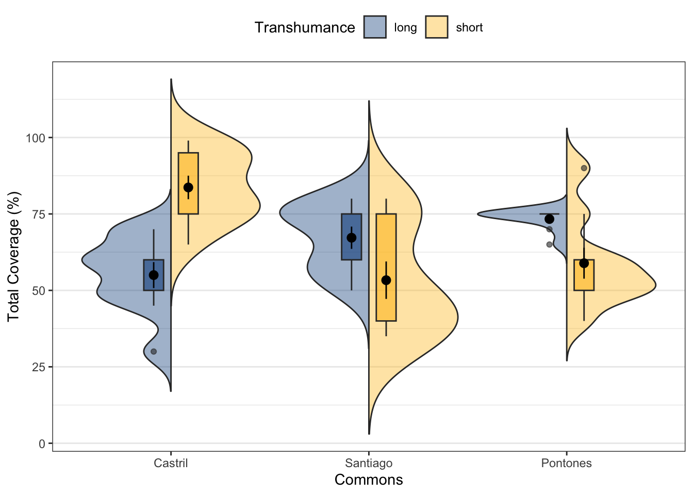
| Version | Author | Date |
|---|---|---|
| 6d44f34 | ajpelu | 2022-11-17 |
yvar <- "fitovol_dm3"
covariates_lmer <- glue::glue_collapse(c(covariates, random_part),
sep = " + ")
f <- reformulate(covariates_lmer, response = yvar)
m <- lmer(glue::glue_collapse(c(f, random_part), " + "),
data = d)faux <- reformulate(
glue::glue_collapse(covariates, sep = " + "), response = yvar)
maux <- glm(faux, data = d)
simulated_resid <- DHARMa::simulateResiduals(maux, n = 1000)
plot(simulated_resid)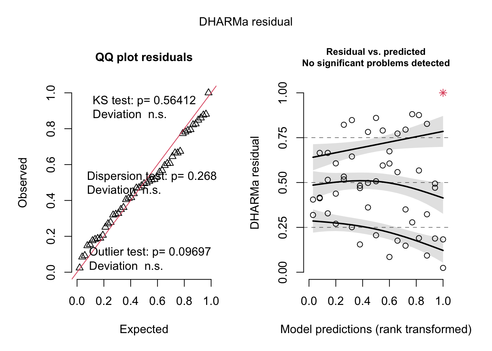
| Version | Author | Date |
|---|---|---|
| 6d44f34 | ajpelu | 2022-11-17 |
plot(performance::check_distribution(maux), panel = FALSE)[[1]] + labs(subtitle = faux)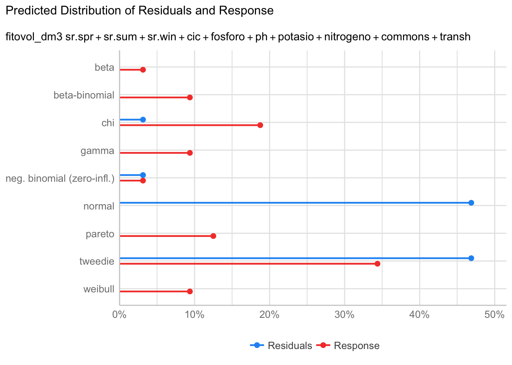
| Version | Author | Date |
|---|---|---|
| 6d44f34 | ajpelu | 2022-11-17 |
check_model(maux)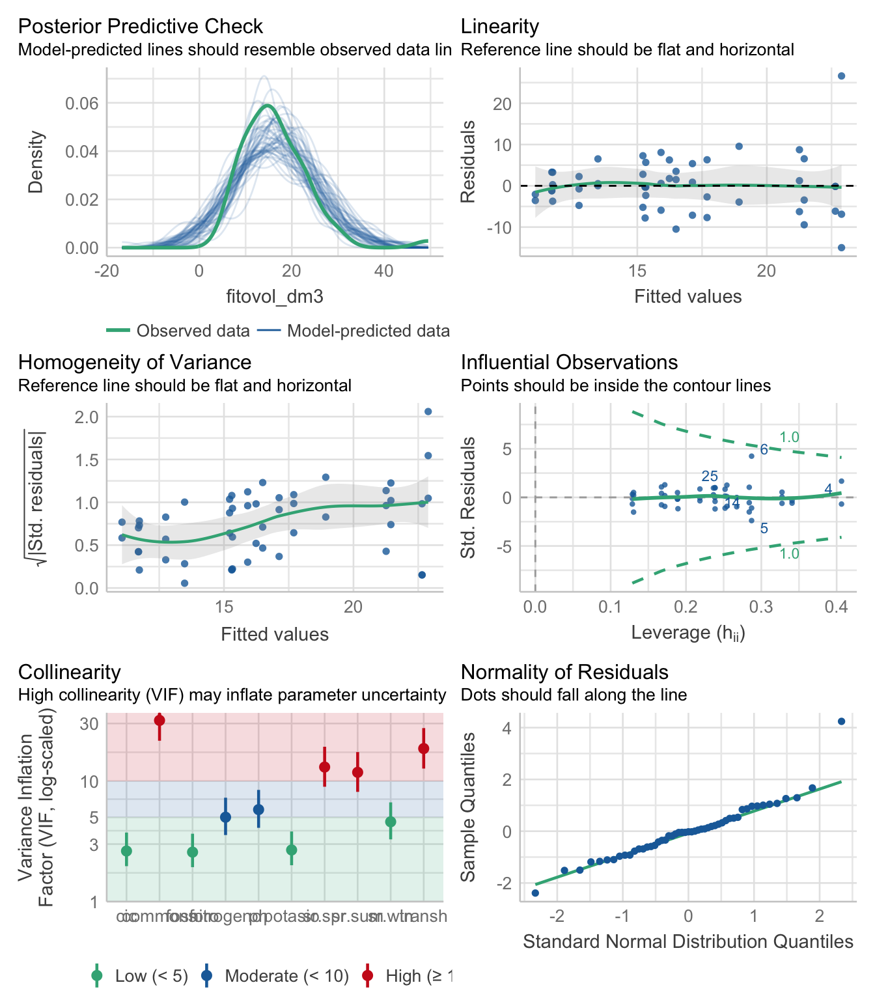
| Version | Author | Date |
|---|---|---|
| 6d44f34 | ajpelu | 2022-11-17 |
rm(maux, faux, simulated_resid) # remove bm <- lmer(
fitovol_dm3 ~ commons + transh + commons:transh + (1 | parcela),
data = d
)
performance(bm) %>%
kbl() %>%
kable_styling()Random effect variances not available. Returned R2 does not account for random effects.| AIC | AICc | BIC | R2_conditional | R2_marginal | RMSE | Sigma |
|---|---|---|---|---|---|---|
| 339.3991 | 342.8277 | 354.8537 | NA | 0.0670276 | 7.166538 | 7.629362 |
assign(paste0('table_performance', yvar), (performance(bm) |> mutate(yvar = yvar))) Random effect variances not available. Returned R2 does not account for random effects.anova(as_lmerModLmerTest(bm))Type III Analysis of Variance Table with Satterthwaite's method
Sum Sq Mean Sq NumDF DenDF F value Pr(>F)
commons 30.741 15.370 2 45 0.2641 0.7691
transh 39.185 39.185 1 45 0.6732 0.4163
commons:transh 136.501 68.250 2 45 1.1725 0.3189formatAnova(as.data.frame(anova(as_lmerModLmerTest(bm))), yvar)tabla_coef(bm)| effect | term | estimate | std.error | statistic | df | p.value |
|---|---|---|---|---|---|---|
| fixed | (Intercept) | 16.61 | 2.54 | 6.53 | 45 | 0.000 |
| fixed | commonsPontones | 0.50 | 3.60 | 0.14 | 45 | 0.890 |
| fixed | commonsSantiago | 2.45 | 3.71 | 0.66 | 45 | 0.512 |
| fixed | transhshort | 2.45 | 3.84 | 0.64 | 45 | 0.528 |
| fixed | commonsPontones:transhshort | -4.45 | 5.26 | -0.84 | 45 | 0.403 |
| fixed | commonsSantiago:transhshort | -8.18 | 5.34 | -1.53 | 45 | 0.133 |
assign(paste0('table_glance', yvar), (glance(bm) |> mutate(yvar = yvar))) tabla_postHoc_commons(bm)| commons | estimate | SE | df | t.ratio | p.value |
|---|---|---|---|---|---|
| Castril - Pontones | 1.7230 | 2.6378 | 12.0826 | 0.6532 | 0.7941 |
| Castril - Santiago | 1.6362 | 2.6794 | 12.5979 | 0.6107 | 0.8170 |
| Pontones - Santiago | -0.0868 | 2.5863 | 11.2445 | -0.0336 | 0.9994 |
tabla_postHoc_transh(bm)| transh | estimate | SE | df | t.ratio | p.value |
|---|---|---|---|---|---|
| long - short | 1.761 | 2.1513 | 11.9731 | 0.8186 | 0.429 |
tabla_postHoc_int(bm)| commons | transh | estimate | SE | df | t.ratio | p.value |
|---|---|---|---|---|---|---|
| Castril - Pontones | long | -0.5000 | 3.5965 | 10.7331 | -0.1390 | 0.9894 |
| Castril - Santiago | long | -2.4514 | 3.7175 | 11.7560 | -0.6594 | 0.7908 |
| Pontones - Santiago | long | -1.9514 | 3.7175 | 11.7560 | -0.5249 | 0.8608 |
| Castril - Pontones | short | 3.9460 | 3.8597 | 13.4527 | 1.0224 | 0.5760 |
| Castril - Santiago | short | 5.7238 | 3.8597 | 13.4527 | 1.4830 | 0.3295 |
| Pontones - Santiago | short | 1.7778 | 3.5965 | 10.7331 | 0.4943 | 0.8755 |
tabla_postHoc_transhcommons(bm)| transh | commons | estimate | SE | df | t.ratio | p.value |
|---|---|---|---|---|---|---|
| long - short | Castril | -2.4460 | 3.8597 | 13.4527 | -0.6337 | 0.5369 |
| long - short | Pontones | 2.0000 | 3.5965 | 10.7331 | 0.5561 | 0.5896 |
| long - short | Santiago | 5.7292 | 3.7175 | 11.7560 | 1.5411 | 0.1498 |
name_ylab <- expression(Fitovolumen~(m^3))
plot_violoin2(df = d, yvar = yvar, name_ylab = name_ylab)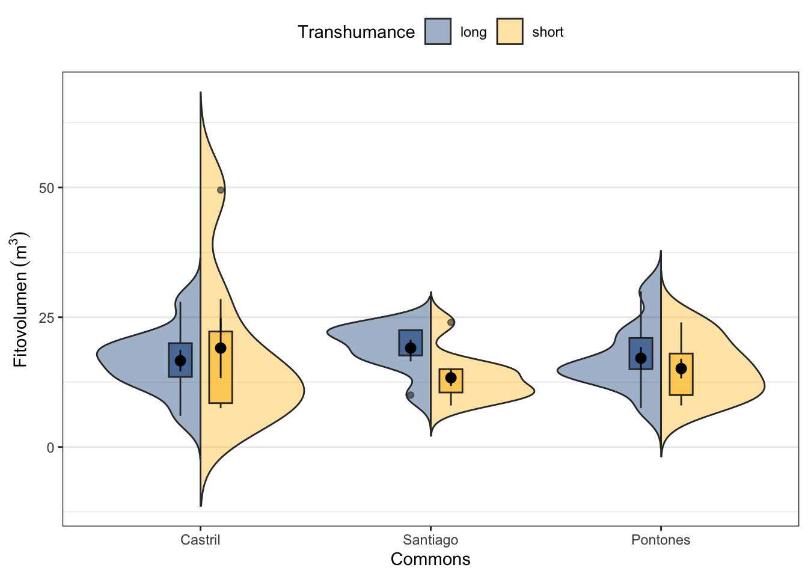
| Version | Author | Date |
|---|---|---|
| 6d44f34 | ajpelu | 2022-11-17 |
yvar <- "tasa_cons"
covariates_lmer <- glue::glue_collapse(c(covariates, random_part),
sep = " + ")
f <- reformulate(covariates_lmer, response = yvar)
m <- lmer(glue::glue_collapse(c(f, random_part), " + "),
data = d)faux <- reformulate(
glue::glue_collapse(covariates, sep = " + "), response = yvar)
maux <- glm(faux, data = d)
simulated_resid <- DHARMa::simulateResiduals(maux, n = 1000)
plot(simulated_resid)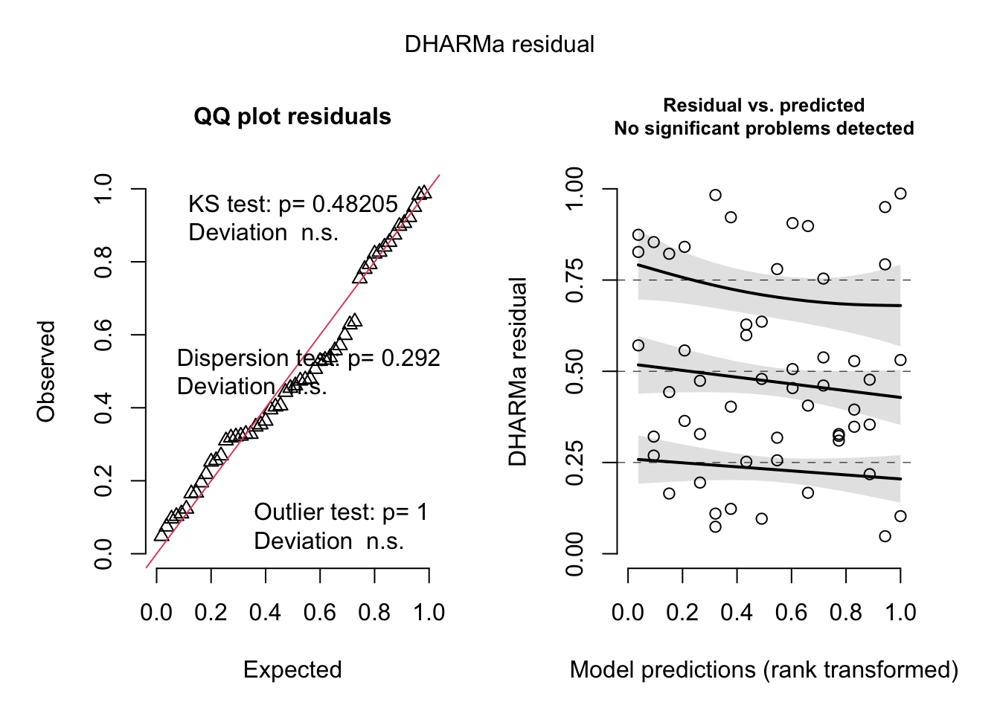
| Version | Author | Date |
|---|---|---|
| 6d44f34 | ajpelu | 2022-11-17 |
plot(performance::check_distribution(maux), panel = FALSE)[[1]] + labs(subtitle = faux)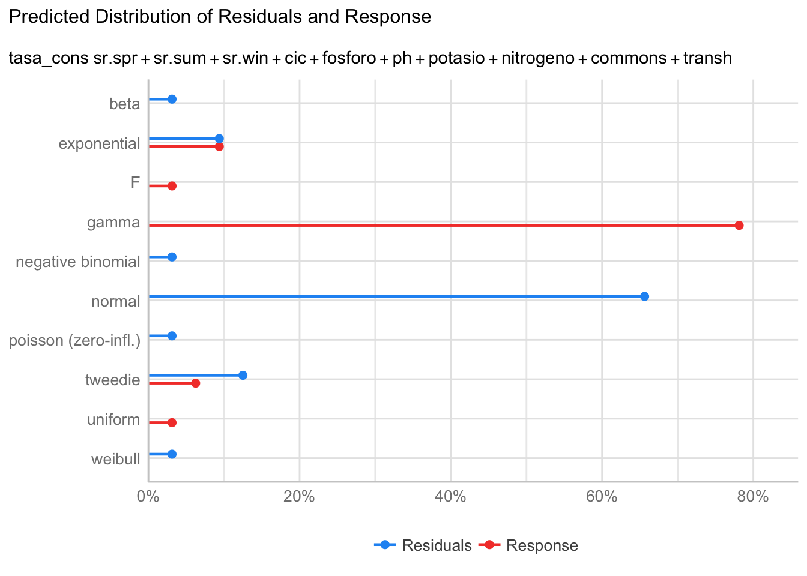
| Version | Author | Date |
|---|---|---|
| 6d44f34 | ajpelu | 2022-11-17 |
check_model(maux)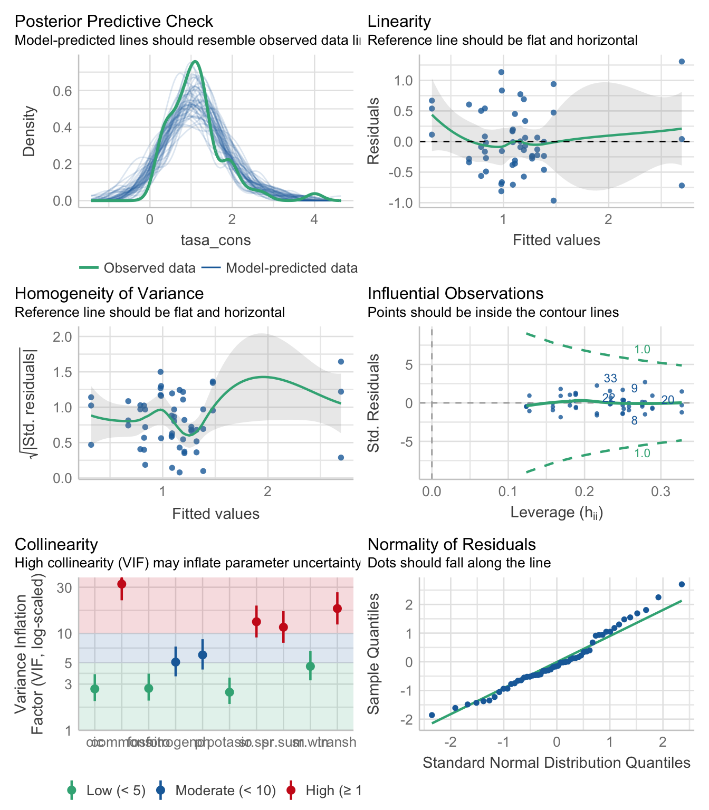
| Version | Author | Date |
|---|---|---|
| 6d44f34 | ajpelu | 2022-11-17 |
rm(maux, faux, simulated_resid) # remove bm <- lmer(
tasa_cons ~ commons + transh + commons:transh + (1 | parcela), data = d
)
performance(bm) %>%
kbl() %>%
kable_styling()| AIC | AICc | BIC | R2_conditional | R2_marginal | ICC | RMSE | Sigma |
|---|---|---|---|---|---|---|---|
| 122.5895 | 125.7895 | 138.5013 | 0.4109353 | 0.1366174 | 0.3177247 | 0.5001391 | 0.5739356 |
assign(paste0('table_performance', yvar), (performance(bm) |> mutate(yvar = yvar))) anova(as_lmerModLmerTest(bm))Type III Analysis of Variance Table with Satterthwaite's method
Sum Sq Mean Sq NumDF DenDF F value Pr(>F)
commons 1.25244 0.62622 2 12 1.9011 0.1918
transh 0.10883 0.10883 1 12 0.3304 0.5761
commons:transh 0.32788 0.16394 2 12 0.4977 0.6199formatAnova(as.data.frame(anova(as_lmerModLmerTest(bm))), yvar)tabla_coef(bm)| effect | term | estimate | std.error | statistic | df | p.value |
|---|---|---|---|---|---|---|
| fixed | (Intercept) | 1.21 | 0.30 | 4.09 | 12 | 0.002 |
| fixed | commonsPontones | -0.06 | 0.42 | -0.14 | 12 | 0.891 |
| fixed | commonsSantiago | -0.38 | 0.42 | -0.91 | 12 | 0.380 |
| fixed | transhshort | 0.46 | 0.42 | 1.10 | 12 | 0.294 |
| fixed | commonsPontones:transhshort | -0.58 | 0.59 | -0.98 | 12 | 0.346 |
| fixed | commonsSantiago:transhshort | -0.38 | 0.59 | -0.64 | 12 | 0.531 |
assign(paste0('table_glance', yvar), (glance(bm) |> mutate(yvar = yvar))) tabla_postHoc_commons(bm)| commons | estimate | SE | df | t.ratio | p.value |
|---|---|---|---|---|---|
| Castril - Pontones | 0.3494 | 0.2962 | 12 | 1.1795 | 0.4868 |
| Castril - Santiago | 0.5730 | 0.2962 | 12 | 1.9344 | 0.1715 |
| Pontones - Santiago | 0.2236 | 0.2962 | 12 | 0.7549 | 0.7365 |
tabla_postHoc_transh(bm)| transh | estimate | SE | df | t.ratio | p.value |
|---|---|---|---|---|---|
| long - short | -0.139 | 0.2418 | 12 | -0.5748 | 0.5761 |
tabla_postHoc_int(bm)| commons | transh | estimate | SE | df | t.ratio | p.value |
|---|---|---|---|---|---|---|
| Castril - Pontones | long | 0.0586 | 0.4189 | 12 | 0.1398 | 0.9893 |
| Castril - Santiago | long | 0.3821 | 0.4189 | 12 | 0.9121 | 0.6432 |
| Pontones - Santiago | long | 0.3235 | 0.4189 | 12 | 0.7723 | 0.7263 |
| Castril - Pontones | short | 0.6402 | 0.4189 | 12 | 1.5283 | 0.3129 |
| Castril - Santiago | short | 0.7639 | 0.4189 | 12 | 1.8236 | 0.2037 |
| Pontones - Santiago | short | 0.1237 | 0.4189 | 12 | 0.2953 | 0.9533 |
tabla_postHoc_transhcommons(bm)| transh | commons | estimate | SE | df | t.ratio | p.value |
|---|---|---|---|---|---|---|
| long - short | Castril | -0.4601 | 0.4189 | 12 | -1.0985 | 0.2935 |
| long - short | Pontones | 0.1215 | 0.4189 | 12 | 0.2900 | 0.7768 |
| long - short | Santiago | -0.0784 | 0.4189 | 12 | -0.1871 | 0.8547 |
name_ylab <- "Consumption rate"
plot_violoin2(df = d, yvar = yvar, name_ylab = name_ylab)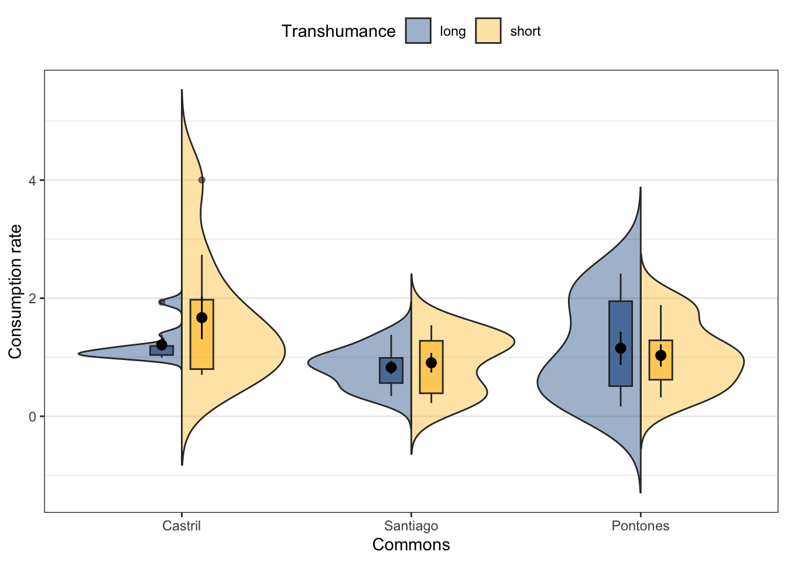
| Version | Author | Date |
|---|---|---|
| 6d44f34 | ajpelu | 2022-11-17 |
anovas <- mget(apropos("anova_"), envir = globalenv()) |>
bind_rows() |>
remove_rownames() |>
relocate(variable, factor) |>
mutate_at(3, ~round(.,2)) |>
mutate_at(4, ~round(.,3))anovas |>
kbl(col.names =
c("Response", "variables", "F", "p.value")) %>%
kable_styling() | Response | variables | F | p.value |
|---|---|---|---|
| fitovol_dm3 | commons | 0.26 | 0.769 |
| fitovol_dm3 | transh | 0.67 | 0.416 |
| fitovol_dm3 | commons:transh | 1.17 | 0.319 |
| rec_total_porc | commons | 1.70 | 0.223 |
| rec_total_porc | transh | 0.00 | 0.979 |
| rec_total_porc | commons:transh | 12.36 | 0.001 |
| riqueza | commons | 2.70 | 0.108 |
| riqueza | transh | 3.58 | 0.083 |
| riqueza | commons:transh | 0.71 | 0.512 |
| shannon | commons | 0.11 | 0.899 |
| shannon | transh | 1.27 | 0.281 |
| shannon | commons:transh | 0.04 | 0.962 |
| tasa_cons | commons | 1.90 | 0.192 |
| tasa_cons | transh | 0.33 | 0.576 |
| tasa_cons | commons:transh | 0.50 | 0.620 |
tablas_glance <- mget(apropos("table_glance"), envir = globalenv()) |>
bind_rows() |>
remove_rownames()tablas_R2 <- mget(apropos("table_performance"), envir = globalenv()) |>
bind_rows() |>
remove_rownames()# export tables
write.csv(anovas, file=here::here("output/anovas_model_social.csv"), row.names = FALSE)
write.csv(tablas_glance, file=here::here("output/tablas_glance_model_social.csv"), row.names = FALSE)
write.csv(tablas_R2, file=here::here("output/tablas_R2_model_social.csv"), row.names = FALSE)
sessionInfo()R version 4.2.1 (2022-06-23)
Platform: aarch64-apple-darwin20 (64-bit)
Running under: macOS Monterey 12.3.1
Matrix products: default
BLAS: /Library/Frameworks/R.framework/Versions/4.2-arm64/Resources/lib/libRblas.0.dylib
LAPACK: /Library/Frameworks/R.framework/Versions/4.2-arm64/Resources/lib/libRlapack.dylib
locale:
[1] en_US.UTF-8/en_US.UTF-8/en_US.UTF-8/C/en_US.UTF-8/en_US.UTF-8
attached base packages:
[1] stats graphics grDevices utils datasets methods base
other attached packages:
[1] DT_0.26 introdataviz_0.0.0.9003 broom.mixed_0.2.9.4
[4] lmerTest_3.1-3 car_3.1-0 carData_3.0-5
[7] emmeans_1.8.1-1 glmulti_1.0.8 rJava_1.0-6
[10] arm_1.13-1 MASS_7.3-57 multilevelmod_1.0.0
[13] yardstick_1.1.0 workflowsets_1.0.0 workflows_1.1.0
[16] tune_1.0.1 rsample_1.1.0 recipes_1.0.1
[19] parsnip_1.0.2 modeldata_1.0.1 infer_1.0.3
[22] dials_1.0.0 scales_1.2.1 broom_1.0.1
[25] tidymodels_1.0.0 MuMIn_1.47.1 lme4_1.1-30
[28] Matrix_1.5-1 glue_1.6.2 rmdformats_1.0.4
[31] knitr_1.40 leaps_3.1 factoextra_1.0.7
[34] nlme_3.1-157 DHARMa_0.4.6 performance_0.10.0
[37] kableExtra_1.3.4 corrplot_0.92 correlation_0.8.2
[40] patchwork_1.1.2 vegan_2.6-4 lattice_0.20-45
[43] permute_0.9-7 fuzzySim_4.3 janitor_2.1.0
[46] here_1.0.1 forcats_0.5.2 stringr_1.4.1
[49] dplyr_1.0.10 purrr_0.3.5 readr_2.1.3
[52] tidyr_1.2.1 tibble_3.1.8 ggplot2_3.4.0
[55] tidyverse_1.3.2 workflowr_1.7.0
loaded via a namespace (and not attached):
[1] utf8_1.2.2 tidyselect_1.2.0 htmlwidgets_1.5.4
[4] grid_4.2.1 munsell_0.5.0 codetools_0.2-18
[7] future_1.28.0 withr_2.5.0 colorspace_2.0-3
[10] qgam_1.3.4 highr_0.9 rstudioapi_0.14
[13] stats4_4.2.1 listenv_0.8.0 labeling_0.4.2
[16] git2r_0.30.1 farver_2.1.1 bit64_4.0.5
[19] DiceDesign_1.9 datawizard_0.6.2 gap.datasets_0.0.5
[22] rprojroot_2.0.3 coda_0.19-4 parallelly_1.32.1
[25] vctrs_0.5.1 generics_0.1.3 ipred_0.9-13
[28] xfun_0.35 randomForest_4.7-1.1 doParallel_1.0.17
[31] R6_2.5.1 lhs_1.1.5 cachem_1.0.6
[34] assertthat_0.2.1 vroom_1.6.0 promises_1.2.0.1
[37] nnet_7.3-17 googlesheets4_1.0.1 gtable_0.3.1
[40] globals_0.16.1 processx_3.7.0 timeDate_4021.106
[43] rlang_1.0.6 systemfonts_1.0.4 splines_4.2.1
[46] gargle_1.2.1 yaml_2.3.6 abind_1.4-5
[49] modelr_0.1.9 backports_1.4.1 httpuv_1.6.6
[52] tools_4.2.1 lava_1.6.10 bookdown_0.30
[55] ellipsis_0.3.2 jquerylib_0.1.4 plyr_1.8.7
[58] Rcpp_1.0.9 ps_1.7.1 rpart_4.1.16
[61] haven_2.5.1 ggrepel_0.9.1 cluster_2.1.3
[64] fs_1.5.2 furrr_0.3.1 magrittr_2.0.3
[67] reprex_2.0.2 GPfit_1.0-8 googledrive_2.0.0
[70] mvtnorm_1.1-3 whisker_0.4 mime_0.12
[73] hms_1.1.2 evaluate_0.18 xtable_1.8-4
[76] pbkrtest_0.5.1 readxl_1.4.1 compiler_4.2.1
[79] crayon_1.5.2 minqa_1.2.4 htmltools_0.5.3
[82] mgcv_1.8-40 later_1.3.0 tzdb_0.3.0
[85] lubridate_1.8.0 DBI_1.1.3 dbplyr_2.2.1
[88] see_0.7.3 boot_1.3-28 modEvA_3.5
[91] cli_3.4.1 parallel_4.2.1 insight_0.18.4
[94] gower_1.0.0 pkgconfig_2.0.3 getPass_0.2-2
[97] numDeriv_2016.8-1.1 terra_1.6-17 xml2_1.3.3
[100] foreach_1.5.2 svglite_2.1.0 bslib_0.4.1
[103] hardhat_1.2.0 webshot_0.5.4 estimability_1.4.1
[106] prodlim_2019.11.13 rvest_1.0.3 snakecase_0.11.0
[109] callr_3.7.2 digest_0.6.30 rmarkdown_2.18
[112] cellranger_1.1.0 gap_1.2.3-6 shiny_1.7.3
[115] nloptr_2.0.3 lifecycle_1.0.3 jsonlite_1.8.3
[118] viridisLite_0.4.1 fansi_1.0.3 pillar_1.8.1
[121] fastmap_1.1.0 httr_1.4.4 survival_3.3-1
[124] bayestestR_0.13.0 iterators_1.0.14 bit_4.0.4
[127] class_7.3-20 stringi_1.7.8 sass_0.4.2
[130] future.apply_1.9.1